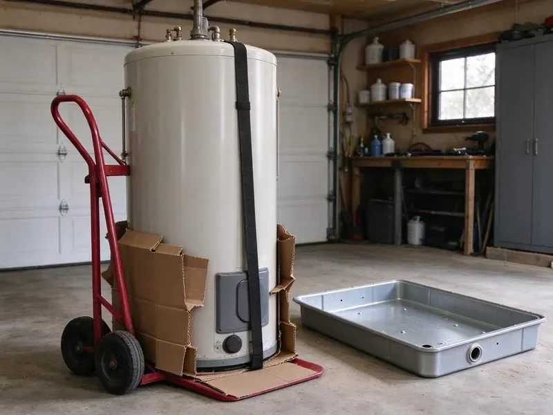
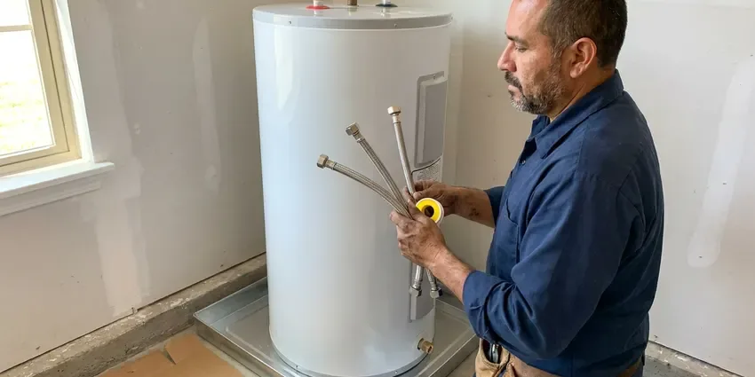

Basement Sump Pump Installation in Conway, AR
Water showing up along the basement wall after rain? DGR Plumbing installs sump pumps across Arkansas that move it out before it reaches the carpet.
- Licensed and Insured
- High Water Alarms
- Pits Cut Through the Slab
- Local Conway Crews

Water in the Basement in Conway, AR?
Call now and we will size, set and test your new pump, in many cases the same day.
New Sump Pumps for Conway, AR Homes
Finished lower levels raise the stakes in Conway. An inch of water ruins carpet pad and the bottom of the drywall in an afternoon, so DGR Plumbing installs submersible pumps with a vertical float and a high water alarm in those basements. An alarm costs very little. Replacing a finished floor is not.
Work we handle every week:
- Slab saw cutting and pit excavation through hardpan and clay
- Battery backup installation and testing
- Water-powered and battery backup pumps

Additional Plumbing Installation Services in Conway, AR
We install water heaters, pumps, lines, and fixtures across Conway, AR with precision workmanship that meets every local code.

Water Heater Installation near Conway


Customers
Why Choose DGR Plumbing for Basement Sump Pump Installation in Conway, AR?
A sump pump only matters on the worst night of the year. So we install it like that night is coming, with a cast iron pump, a quality check valve and a discharge route that keeps water from cycling straight back into the pit through the gravel bed. We never skip the valve.
- Correct Sizing, We figure gallons per hour at your real discharge height rather than trusting the box.
- Backup Ready, Battery backups keep pumping when storms knock out power.
- Flood Prevention, A pump that starts on time stops water before it reaches the carpet.
Citywide Coverage
We serve Conway and the surrounding towns for sump pump installation. Hillside lots need different discharge routes than flat ones, and we plan the exit point around your grading, HOA rules and where the neighbor's yard sits before we cut any pipe. That avoids complaints.
Experienced Team
The team installs primary pumps, backups and alarms on a weekly basis. They will explain your options in plain English, and before they leave they show you how to pour a bucket of water into the pit to test the pump, which you should do every few months. It takes two minutes.
Safety-First Approach
Local building codes govern discharge location, pit lids and electrical work, and we follow them on every job in Conway, AR. When the work needs a permit, we pull it, and we leave the paperwork with you. Inspectors see clean work.
Trusted Certified Conway Plumbing Services Professionals
At DGR Plumbing, we take pride in licensed, certified plumbing services throughout Conway, AR. Those papers on the wall mean something. Our plumbers hold recognized industry credentials, and they follow strict safety and quality rules on every repair, installation and maintenance call we run.
Call Us Now PHCC Plumbing Contractor Recognition
PHCC Plumbing Contractor Recognition Better Business Bureau (BBB) Accreditation
Better Business Bureau (BBB) Accreditation Angi Certified Pro
Angi Certified Pro ISO 9001 Quality Management Certification
ISO 9001 Quality Management CertificationSump Pits, Pumps and Backups in Conway, AR
Battery Backup Sump Pump Systems in Conway
Outages and heavy rain tend to show up together. Without house power, a battery backup keeps a second pump going, and a fully charged 75 amp-hour battery can run a typical backup pump for several hours of on-and-off cycling, longer on a light night. We load test the battery.

Quiet Submersible Pumps for Finished Basements in Conway
Finished basements call for a quiet pump and a sealed lid. A submersible with a gasketed cover keeps the noise down, and we route the discharge behind framing or through a closet so the pipe does not run across a wall you just painted in your Conway home. The concrete patch ends up flush with the floor.
Discharge Line and Check Valve Installation in Conway
Rigid PVC carries the water from the pump out through the rim joist and at least 10 feet from the house. We add a spring check valve so the water in the pipe cannot fall back, which cuts motor run time and the loud thunk you hear after every cycle. Hard freezes hit Arkansas most winters, especially in the northern and higher areas, and exposed pipes can split during a sharp cold snap. We fit a freeze-resistant outlet.
Emergency Sump Pump Installation in Conway, AR
A dead pump with water rising in the pit is a same-day call. The plumber shows up with a replacement pump already loaded, pulls the old unit, checks whether the float or the check valve caused the failure, and gets water moving again in Conway, AR. Keep a wet vac running until then.
Wayne Sump Pump Installation in Conway, AR
Wayne builds everything from basic utility pumps to combo units with a built-in backup. We help you pick the model that fits your pit, then install it with a proper check valve and a dedicated outlet so it runs the way Wayne rated it in your Conway, AR basement. A few models send phone alerts.
New Sump Pit Excavation in Conway
No pit yet? We find the low spot where water collects, saw cut the slab, dig roughly 24 to 30 inches deep, and set a liner surrounded by washed gravel so water can enter while fine soil stays out. We pour new concrete flush with the floor.
Sump Pit Installation in Conway, AR
Pit size controls how often the pump starts. A small 15 inch pit makes the pump cycle every minute in heavy flow, so we usually install an 18 by 22 inch or 18 by 30 inch basin with a solid bottom and perforated sides wrapped in filter fabric. Fewer starts mean a longer life.

Same-Day Sump Pump Installation in Conway
Same-day emergency installs cover pumps that quit in the middle of a storm. First we get the standing water out of the pit, then set a new pump on a new check valve, plug it into a tested GFCI outlet and watch it run through several cycles before leaving your Conway basement. A backup is the next conversation.
Basement Sump Pump Installation Near Me in Conway, AR
Spotted water on the basement floor and searched for help nearby? Give us a call before the next storm hits, because a pit that is already full has nowhere to put the next inch of rain, and the water finds the lowest finished room in the house. Pumps are in stock.
Typing sump pump installation near me into a phone in Conway, AR gets you a long list. A good question for any installer is whether they measure lift, whether they install a check valve, and whether the discharge will end at least 10 feet from your foundation. We do all three.
DGR Plumbing at a Glance
- Licensed and insured plumbers serving Conway, AR
- 24/7 emergency service with same-day scheduling
- Upfront, flat-rate pricing before work begins
- 4.8-star rated by 871+ Arkansas customers
Conway Map
Conway Information
- Population
- 69,580
- Area codes
- 501/870/479
- Service area
- Conway and towns within a 40 mile drive
- Nearby
- Sherwood, North Little Rock, Little Rock, Benton
Rocky, shallow soil in hilly parts of Arkansas makes trenching harder and can add time on sewer and water line replacements. In Conway, AR, a properly matched pump lifts that water out of the pit and sends it far enough from the wall that it does not come straight back.
Talk to a Plumber
Reach out to DGR Plumbing for honest, reliable plumbing from people who know the trade in Conway, AR.
Our Specialized Plumbing Services in Conway, AR
At DGR Plumbing, we handle the full list of plumbing services across Conway, AR. We go from leak detection all the way to full system installations, for homes and commercial buildings, and we do it quickly at a fair price. Explore our core services below:


What a Sump Pump Install Looks Like in Conway, AR
From the first look at your pit to the final test, DGR Plumbing works the same way in Conway, AR.
Request a Quote
Call (501) 251-9708 or use the online form and tell us where you see water. We set a time for a plumber to come look at the basement.
On-Site Assessment
A licensed plumber visits your Conway home, finds the low point and looks at where the water enters, then recommends a pit location and a pump type.
Professional Installation
We cut the slab if needed, set the basin, install the pump and run the discharge to meet local Arkansas codes. Every pump gets its own GFCI-protected outlet.
Frequently Asked Questions About Basement Sump Pump Installation in Conway
Replacing a pump in an existing pit usually runs $500 to $1,200 including the pump and check valve. A brand new pit through the slab falls between $1,500 and $3,500, and a battery backup adds roughly $600 to $1,500. Most people add the backup.
Working with a licensed plumber who pulls permits keeps the job inspected and avoids trouble with insurance claims or a future sale. New pits, new circuits and new discharge routes are the parts most likely to need a plumbing permit. The local requirements get checked before we start, and when a permit applies we pull it and schedule the inspection ourselves. No trips to the permit office.
Most standard installs finish within 4 to 8 hours. Long discharge runs or a new pit can add several hours, and if we need a new circuit from the panel, an electrician may need to come out the same day, which can push the job into the evening. The timeline comes with the quote.
River flooding affects low-lying parts of Arkansas, and floodwater can contaminate wells and swamp drain fields. Outages and storms arrive together, so we recommend a battery backup in most basements. It switches on by itself when the main pump loses power, and it also catches the water if the primary switch sticks or the pump simply cannot keep up with a heavy inflow. It is cheap insurance.
Watch for constant running, rapid cycling or grinding noises. A sticking float or rust streaks on the housing also mean trouble, as is water sitting above the switch level without the pump starting. Replace it before the next storm.
Labor on our sump pump installs is warrantied, typically for one year. Each pump also has a factory warranty, usually one to five years depending on the brand and model, and we write the exact coverage on your invoice so you know which part to call about if something fails. Keep the receipt.
Every two to three months, and before and after the wet season. Dump a bucket of water into the pit slowly, then watch the float lift, the pump start, the water drop, and the pump shut off cleanly without humming or rattling. It takes a minute.
A primary pump does the everyday work. The secondary, usually battery powered, sits beside it as a backup, and it kicks on if the primary fails, loses power, or gets overwhelmed by more water than it can move during a heavy storm. Each pump gets its own check valve.
What Our Customers Say About Our Plumbing Experts
Tyler J.
We bought a taller comfort height toilet for my dad, who just had knee surgery. The plumber pulled the old one, found the flange was cracked, and replaced it before setting the new bowl. Took about two hours.
Toilet Installation · Sherwood, AR
Karen W.
After our third pinhole leak in copper, we stopped patching. DGR Plumbing gave us a written plan room by room and repiped the house in PEX while we stayed in it. The crew covered our floors every morning and cleaned up every night.
Repiping · North Little Rock, ARRobert G.
The camera showed a full break in our clay sewer line near the street. DGR Plumbing replaced it with a trenchless pipe burst, so the only digging was two small pits in the yard. They let us watch the footage before and after.
Sewer Line Replacement · Pine Bluff, ARJames P.
Our restaurant had a slow leak at the hand sink that was rotting the cabinet base. DGR Plumbing came in at six in the morning before prep, replaced the trap and both supply lines, and was packed up before my first cook clocked in.
Commercial Plumbing · North Little Rock, ARAngela D.
Our sump pump quit during a storm and the water was an inch from the basement carpet. DGR Plumbing put in a new pump with a battery backup that same evening. We have had two heavy rains since. It kicked on both times.
Sump Pump · Hot Springs, ARNathan E.
Our tankless heater kept throwing an error code and shutting off mid shower. The tech flushed the heat exchanger, which was full of scale, and replaced a bad flow sensor. Hot water has been steady for half a year now.
Water Heater Repair · Sherwood, AR